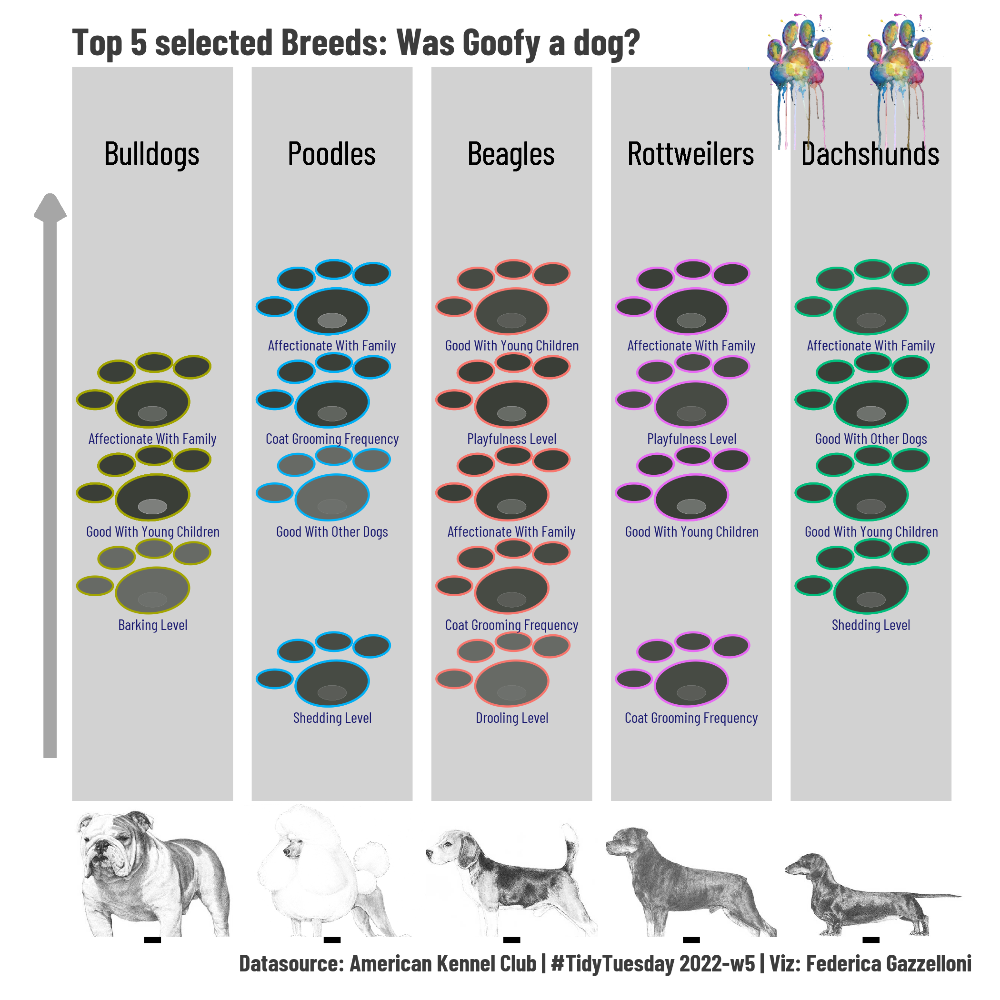

Dog breeds
By Federica Gazzelloni
February 5, 2022
Overview
This #TidyTuesday post is all about drawing with R.
I have replicated the dogs' prints (or paws) using R. For solving this kind of tasks you need to be very “practice” with functions outcomes. And this means to have in mind the shape the function will take. For example we know that \(y = x^2\) would shape a parabolic function.
So that, I decided to get some extra inspiration and used the ggforce::geom_ellipse() function to produce ellipses of different sizes.

The data set for this week #TidyTuesday contains Dog breeds information, in three datasets.To load the data:
breed_traits <- readr::read_csv('https://raw.githubusercontent.com/rfordatascience/tidytuesday/master/data/2022/2022-02-01/breed_traits.csv')
trait_description <- readr::read_csv('https://raw.githubusercontent.com/rfordatascience/tidytuesday/master/data/2022/2022-02-01/trait_description.csv')
breed_rank_all <- readr::read_csv('https://raw.githubusercontent.com/rfordatascience/tidytuesday/master/data/2022/2022-02-01/breed_rank.csv')
Data Wrangling
A bit of data wrangling to make a rank dataset and see which are the 2020 favourite breeds.
rank<-breed_rank_all%>%
count(Breed,`2020 Rank`,Image)%>%
arrange(`2020 Rank`)%>%
slice(1:10)%>%
relocate(`2020 Rank`)%>%
select(-n)
rank
Select favourite breeds, and set the images
dogs<-c("Bulldogs","Poodles","Beagles","Rottweilers","Dachshunds")
images <-rank%>%filter(Breed%in%dogs)%>%select(Breed,Image)
my_df <-breed_traits%>%
select(-"Coat Type",-"Coat Length")%>%
filter(Breed%in%dogs)%>%
mutate(id=row_number())%>%
relocate(id)%>%
pivot_longer(cols=3:16,names_to="factor",values_to="value")%>%
inner_join(images,by="Breed")
Set some extrafonts:
library(extrafont)
library(showtext)
showtext::showtext_auto()
showtext::showtext_opts(dpi=320)
library(sysfonts)
#font_families_google()
font_add_google(name="Barlow Condensed",family="dogs")
family = "dogs"
And finally, make the plot, use:
- ggforce::geom_ellipse to make the paws
- ggimage::geom_image to add the images
dog_prints_plot <-
ggplot(my_df,aes(id,value,group=Breed))+
# this is the largest part of the paw
ggforce::geom_ellipse(aes(x0=id,y0=value-0.2,a=0.2,b=0.25,
angle=50,color=Breed),fill="#393d36",size=0.5,alpha=0.7)+
# the following four ellipses are small extrems of the paw
ggforce::geom_ellipse(aes(x0=id+0.22,y0=value+0.2,a=0.1,b=0.12,
angle=50,color=Breed),fill="#393d36",size=0.5,alpha=0.7)+
ggforce::geom_ellipse(aes(x0=id-0.2,y0=value+0.15,a=0.1,b=0.12,
angle=50,color=Breed),fill="#393d36",size=0.5,alpha=0.7)+
ggforce::geom_ellipse(aes(x0=id+0.01,y0=value+0.25,a=0.1,b=0.1,
angle=50,color=Breed),fill="#393d36",size=0.5,alpha=0.7)+
ggforce::geom_ellipse(aes(x0=id-0.32,y0=value-0.15,a=0.1,b=0.1,
angle=50,color=Breed),fill="#393d36",size=0.5,alpha=0.7)+
# this is the grey part of the paw
ggforce::geom_ellipse(aes(x0=id,y0=value-0.3,a=0.08,b=0.08,
angle=50),color="grey65",size=0.02,fill="grey65",alpha=0.1) +
# The segment is to make the arrow up
geom_segment(x=0.43,xend=0.43,y=0,yend=6, size=3,color="grey65",
arrow = arrow(length = unit(c(0, 0, 0.4, 0.4), 'cm')))+
# description of the factors
geom_text(aes(label=factor),check_overlap = T, vjust=5.5, hjust=0.5, size=2.5, color="midnightblue",family=family)+
# The breed's names
geom_text(aes(x=id,y=6.5,label=Breed),color="black",size=5.5,family=family,face="bold")+
# Images of the breeds
ggimage::geom_image(aes(x=id,y=-1.4,image=Image),size=0.2)+
# expand the canvas to make the paws standing out
scale_y_continuous(expand = c(0,1))+
ylim(-1.5,7)+
coord_cartesian()+
labs(title="Top 5 selected Breeds: Was Goofy a dog?",
caption="Datasource: American Kennel Club | #TidyTuesday 2022-w5 | Viz: Federica Gazzelloni")+
ggthemes::theme_fivethirtyeight()+
theme(text = element_text(family = family,size=14),
plot.title = element_text(size=18,hjust=0.1),
plot.caption = element_text(face = "bold",vjust=0.5),
panel.grid.major.x = element_line(size=38),
panel.grid.major.y = element_blank(),
axis.text.y = element_blank(),
axis.text.x = element_blank(),
axis.ticks.x = element_line(size=4),
plot.background = element_rect(color="white",fill="white"),
panel.background = element_rect(color="white",fill="white"),
legend.position = "none")
Add extra images and save it
library(cowplot)
final <- ggdraw()+
draw_plot(dog_prints_plot)+
draw_image("print.png",x=0.3,y=0.43,scale=0.16)+
draw_image("print.png",x=0.4,y=0.43,scale=0.16)
ggsave("dog_prints_plot.png",final)
Resources:
- Posted on:
- February 5, 2022
- Length:
- 2 minute read, 363 words
- See Also: